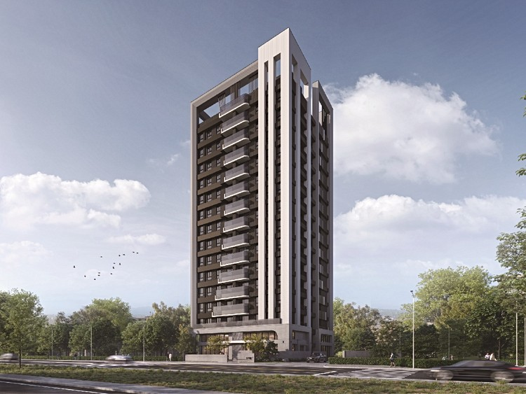
中麗若隱
青埔 A19 旁 39 坪純三房
把坪數留給真正會用到的日常。近機場捷運 A19，以均質三房、低戶數與重視結構履歷的規劃，回應青埔自住家庭對空間、採光與安心感的期待。
不是把三房塞進坪數，而是把生活放進格局。
以下特色皆為建商或公開銷售資料的說法，我會標示來源，並說明還要再確認什麼。
39 坪均質三房
全案產品定位單純，約 39 坪三房，適合重視完整公私領域與長期居住尺度的自住家庭。
戶戶邊間，雙面採光
單層四戶規劃，公開資料指出戶戶邊間；三間臥室與兩間衛浴皆有對外窗，並設前後陽台。
53 戶低戶數社區
1 棟 53 戶純住宅、單層四戶雙梯，日常出入相對單純，也更貼近喜歡安靜生活的家庭。
近捷運，也近公園
步行生活圈可連結機捷 A19、青埔運動公園與採買機能；高鐵、國道與台 66 線也在區域交通網內。
四種戶別，都是完整三房尺度。
全案為單層四戶配置，A1、A3 為對應型格局，A2、A5 為另一組相似型格局。點擊圖片可查看較大圖面。
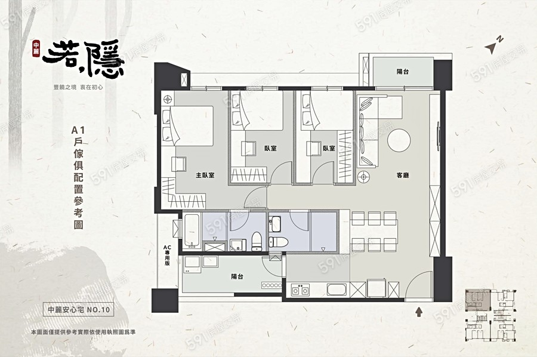
查看大圖 ↗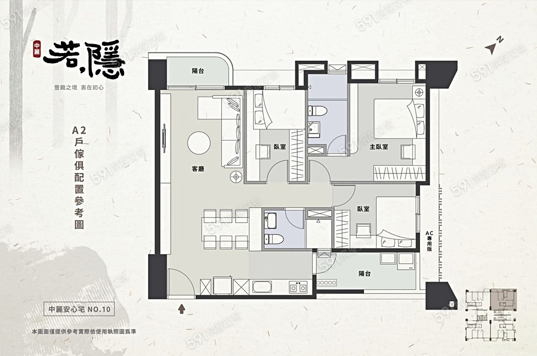
查看大圖 ↗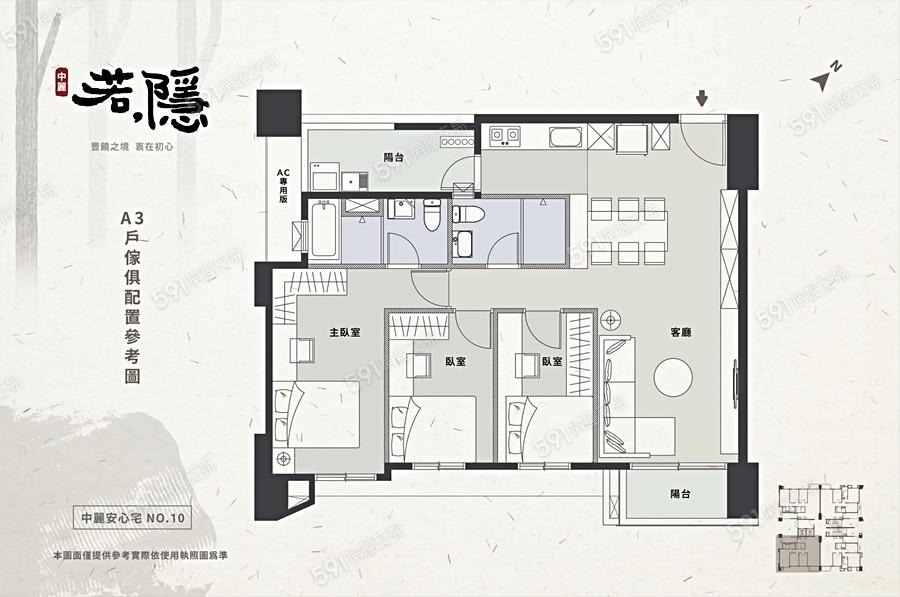
查看大圖 ↗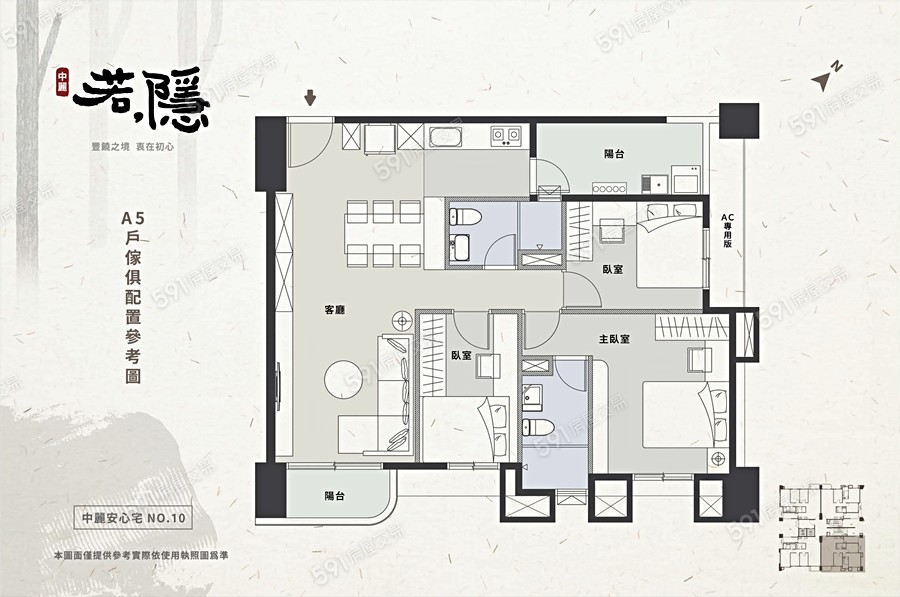
查看大圖 ↗格局圖請洽售場或參考 591 新建案頁面。尺寸、管線、梁柱、設備、裝修與交屋內容，均以建商提供的正式圖說及買賣契約為準。
成交資訊獨立整理，看得懂再做比較。
以下為樂居「中麗若隱」社區頁於 2026 年 9 月 6 日的公開資料快照。價格放在市場資訊區，方便與樓層、座向、車位及付款條件一起判讀。
13 筆
樂居頁面彙整的成交資料筆數
53.82–57.75 萬／坪
頁面所列歷史最低至最高單價
13／53 戶
樂居目前顯示的已銷售戶數／全案戶數
閱讀提醒：實價登錄有申報與揭露時間差；「13／53 戶」是樂居頁面顯示值，不等於建商即時銷控。不同樓層、座向、車位、付款條件也會影響總價與單價。資料來源：樂居｜中麗若隱社區資料。最新可售狀況請向我確認。
真正的安心，藏在完工後看不見的地方。
中麗若隱公開資料指出，全棟採用 Alfa Safe 耐震系統工法，施工由結構設計、系統鋼筋、混凝土檢驗與灌漿養護一路留下紀錄，並規劃每戶專屬的建築結構安全履歷。以下是建商公開的內容，我整理成重點，不代表我的保證。
- Alfa Safe
- YKK 氣密窗
- 6+6 膠合玻璃
- 林內三機
- KOHLER 衛浴
- Hansgrohe 五金
全棟 Alfa Safe 耐震系統
中麗若隱官方公開內容明載全棟採用，從鋼筋配置與綁紮細節提升施工一致性。
每戶建築結構安全履歷
公開資料稱將彙整柱、梁、版、牆與混凝土的施工影像、文字紀錄及第三方查驗內容。
12 年防水保固
中麗若隱公開資料所列保固年限；適用部位、起算與除外條件以正式契約為準。
九大安心工法 SOP
把鋼筋、續接、系統牆、混凝土、安全履歷、防水及排水等工序納入標準化管理。
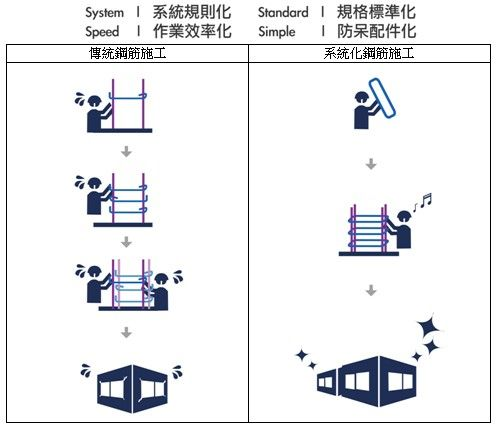
中麗公開的九大安心工法
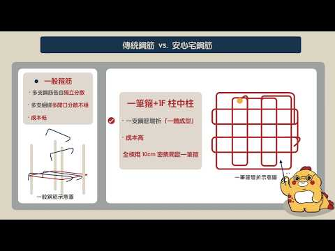
01 安心宅鋼筋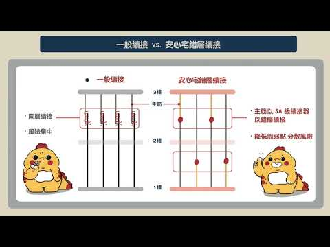
02 錯層續接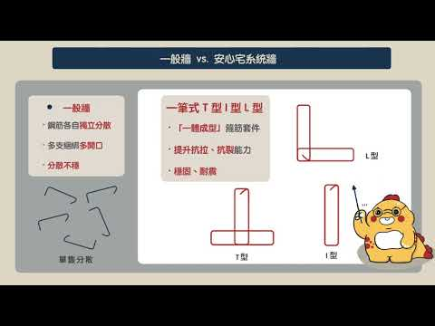
03 專利系統牆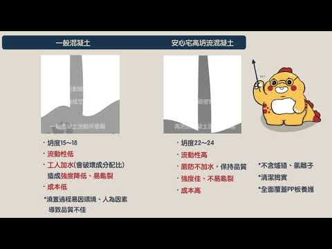
04 高坍流混凝土 05 建築結構安全履歷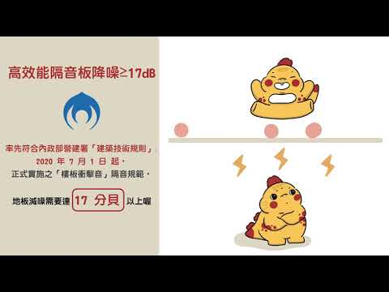
06 減噪地板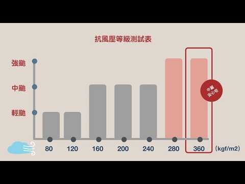
07 高品質鋁窗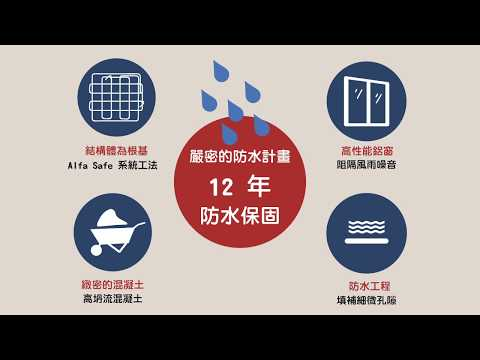
08 十二年防水保固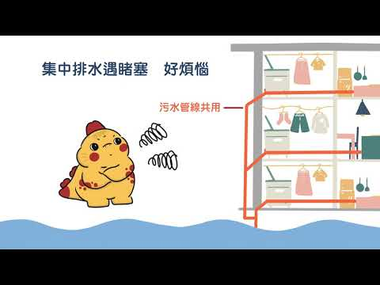
09 分流排水系統九張封面取自中麗建設「安心宅」系列頁面所嵌入的工法影片；內容用於說明中麗品牌工法，實際應用於中麗若隱的項目與規格仍以本案正式建材表、圖說及契約為準。
通勤、休閒與採買，都在日常半徑裡。
機捷 A19
公開資料約步行 6 分鐘，串接 A18 高鐵桃園站與機場交通。
青埔運動公園
公開資料約步行 4 分鐘，散步、運動與親子活動都有去處。
家樂福・寶雅
公開資料約步行 6 分鐘，日常採買不必特別繞遠。
芭里國小・青埔國中
學區與就學距離依政府最新學區公告及實際路線為準。
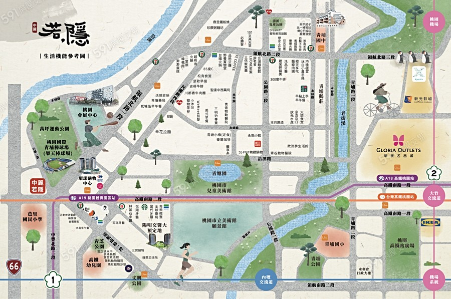
步行／車程為公開銷售資料概估，會因起點、路線與交通狀況不同而有差異，請以現場實測為準。學區可到青埔學區查詢用里別確認。
建案基本資料
價格不放在廣告最前面，因為真正影響選擇的是樓層、座向、車位與付款節點。最新可售戶別與實際成交條件，直接向小賈確認會更準確。
| 項目 | 內容 |
|---|---|
| 投資興建 | 中麗建設股份有限公司 |
| 基地位置 | 桃園市中壢區，高鐵南路三段 × 文康二路 |
| 土地使用分區 | 特定農業區甲種建地（樂居資料） |
| 基地面積 | 524.53 坪 |
| 產品規劃 | 約 39 坪・3 房 |
| 社區規模 | 1 棟・53 戶住家・地上 14 層／地下 2 層 |
| 公設比 | 34% |
| 管理費 | 85 元／坪／月（樂居資料；以管理規約為準） |
| 車位規劃 | 69 個坡道平面車位 |
| 充電車位 | 樂居標示「充電車位（私）」；實際配置戶別與規格請洽售場 |
| 結構 | RC 鋼筋混凝土 |
| 建築設計 | 拓璞聯合建築師事務所 |
| 營造公司 | 富翰營造有限公司 |
| 企劃銷售 | 實美廣告行銷股份有限公司 |
| 預計完工 | 2027 年第 2 季（依公開資料） |
| 目前銷售 | 青埔房仲小賈／我的家團隊可協助洽詢 |
常見問題
中麗若隱是預售屋嗎？可以換約嗎？
價格大概多少？
12 年防水保固是怎麼算的？
這是建商的官方網站嗎？
可以預約看屋嗎？
資料來源
- 中麗建設（官方公開內容）
- 591 新建案
- 樂居：中麗若隱社區資料（2026/9/6 快照）
- Alfa Safe 系統牆說明
- 經濟部智慧財產局專利介紹